pontos
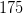, 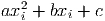, 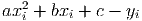,
pontos
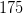, 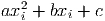, 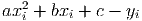,  , calcular os coeficientes
, calcular os coeficientes  , 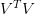, 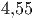, 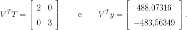
tais que a função dada por
, 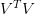, 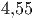, 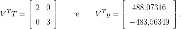
tais que a função dada por
O problem geral de ajuste linear consiste em dada uma família gerada pelo
conjunto de 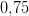 funções e um conjunto de pontos
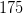, 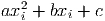, 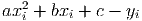, , calcular os coeficientes , 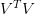, 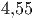, 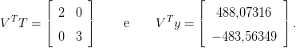
tais que a função dada por
|
|
minimiza o resíduo
|
|
Aqui, a minimização é feita por todas as possíveis escolhas dos coeficientes 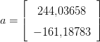, 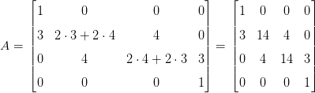, 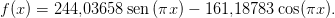, 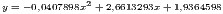.
Com o objetivo de tornar a desenvolvimento mais claro, vamos escrever  como a soma dos resíduos parciais:
como a soma dos resíduos parciais:
|
|
Do fato que 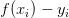, temos que cada resíduo pode ser escrito como
|
|
A fim de encontrar o ponto de mínimo, resolvemos o sistema oriundo de igualar a zero cada uma das derivadas parciais de 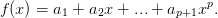 em relação aos coeficientes 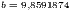, i.e. devemos resolver:

Dividindo cada equação por 2 e escrevendo na forma matricial, obtemos 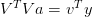, onde a matriz 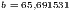 é dada por:

 , por:
, por: 
Agora, observamos que 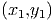 e 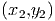, onde a matriz 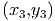 é dada por:
|
|
e é o vetor coluna 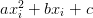,
Então, o problema de ajuste se reduz a resolver o sistema linear 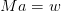, ou 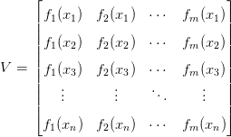. Este sistema linear tem solução única se a matriz 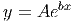 for inversível. O teorema a seguir mostra que isto acontece sempre a matriz 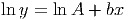 possui posto 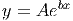, ou seja, o número de linhas linearmente independentes for igual ao número de colunas.1
Teorema 7.2.1. A matriz 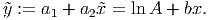 é quadrada de ordem 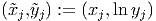 e é inversível sempre que o posto da matriz 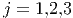 é igual a número de colunas 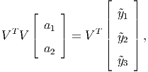.
Demonstração. Para provar que 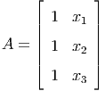 é inversível, precisamos mostrar que se 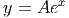 é um vetor de ordem 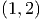 e 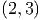, então 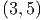. Suponha, então, que 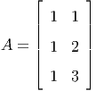, isto é, 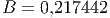. Tomando o produto interno da expressão 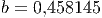 com 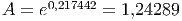, temos:
Observação 7.2.1. Este problema é equivalente a resolver pelo métodos dos mínimos quadrados o seguinte sistema linear:
 |
O caso de ajuste de um reta para um conjunto de pontos é um caso particular de ajuste linear.
Solução. O problema consiste em ajustar uma função da forma
 no conjunto de pontos dados. Notamos que 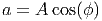 é uma
função da família gerada pelo conjunto de funções .
Então, aplicando o procedimento acima, temos que o vetor dos coeficientes
no conjunto de pontos dados. Notamos que 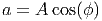 é uma
função da família gerada pelo conjunto de funções .
Então, aplicando o procedimento acima, temos que o vetor dos coeficientes
 é solução por mínimos quadrados do sistema linear ,
onde:
é solução por mínimos quadrados do sistema linear ,
onde:
|
|
Ou seja, é a solução do sistema dado por
|
|
A solução desse sistema é e . A Figura 7.2, apresenta um gráfico dos pontos e da reta ajustada.
Exemplo 7.2.2. Encontre a função que melhor se ajusta pelo critérios dos mínimos quadrados aos seguintes pontos dados
|
|
Solução. Pelo procedimento visto nesta seção, temos que os coeficientes e são dados pela solução por mínimos quadrados do seguinte sistema linear
|
|
cuja matriz de coeficientes é:
 |
Então, a solução por mínimos quadrados é
|
|
Ou seja, é a função ajustada ao conjunto de pontos dados. A Figura 7.3 apresenta o gráfica de e dos pontos dados.
No Scilab, podemos computar os coeficientes da função da seguinte forma:
Observação 7.2.2. No Scilab, quando resolvemos um sistema  usando
usando
estamos computando a inversa da matriz  e multiplicando por
e multiplicando por  . Podemos
evitar a computação da inversa de
. Podemos
evitar a computação da inversa de  usando o operador contra-barra (
usando o operador contra-barra ( ).
Neste caso, escrevemos
).
Neste caso, escrevemos
Quando o sistema  não é uma matriz quadrada, A/b retorna a solução por
mínimos quadrados do sistema
não é uma matriz quadrada, A/b retorna a solução por
mínimos quadrados do sistema  , enquanto inv(A)*b retorna um erro,
pois
, enquanto inv(A)*b retorna um erro,
pois  não é uma matriz quadrada e, portanto, não é invertível.
não é uma matriz quadrada e, portanto, não é invertível.
O ajuste polinomial é o caso particular do ajuste linear para funções polinomiais, isto é, funções do tipo
 |
Neste caso, a matriz  associada ao ajuste dos pontos
associada ao ajuste dos pontos  ,
,  ,
,
 ,
,  ,
,  é dada por:
é dada por:
 |
Então, os coeficientes  ,
,  , são dados pela solução do sistema
linear
, são dados pela solução do sistema
linear  :
:
 |
Exemplo 7.2.3. Entre o polinômio de grau 2 que melhor se ajusta aos pontos dados na seguinte tabela:
 |
Solução. Um polinômio de grau 2 pode ser escrito na seguinte forma:
 |
Assim, o problema se resume em encontrarmos a solução por mínimos quadrados do seguinte sistema linear:
 |
Ou, escrita na forma matricial,  , onde:
, onde:
 |
A solução por mínimos quadrados é, então:
 |
Ou seja, o polinômio de grau 2 que melhor ajusta os pontos dados no sentido de
mínimos quadrados é  . A
Figura 7.4 mostra o gráfico do polinômio ajustado e os pontos dados.
. A
Figura 7.4 mostra o gráfico do polinômio ajustado e os pontos dados.
No Scilab, podemos computar o polinômio  da seguinte forma:
da seguinte forma:
Para fazermos o gráfico do polinômio e dos pontos, digitamos:

Resposta.  ,
,  ,
,  .
.

Resposta.  .
.

E 7.2.3. Dado o seguinte conjunto de dados
 |
 que
melhor aproxima os valores dados.
que
melhor aproxima os valores dados.
 que melhor
aproxima os valores dados.
que melhor
aproxima os valores dados.
Resposta. a)  ,
,  ,
,  ; b)
; b) ,
,  ,
,  ,
,
 .
.


 que melhor se ajusta no
sentido de mínimos quadrados aos pontos:
que melhor se ajusta no
sentido de mínimos quadrados aos pontos:

 que melhor aproxima o seguinte
conjunto de dados:
que melhor aproxima o seguinte
conjunto de dados: